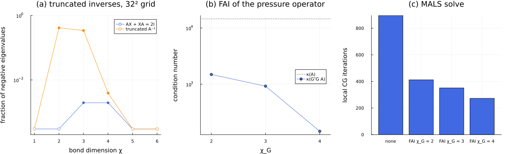

Factorized approximate inverse preconditioners
The alternating solvers of the previous tutorials reduce a linear system in the TT format to a sequence of small local problems, which they solve with CG when the operator is SPD. The number of CG iterations grows with the square root of the condition number, and for the second-order elliptic operators of PDEs the condition number grows as $\mathcal{O}(h^{-2})$, so that fine grids, which the QTT format makes affordable in memory, make the solves slow. This tutorial reproduces in miniature the main argument of Torrente et al., Factorized approximate inverse preconditioners in the tensor train format ("the paper"): an approximate inverse used as a preconditioner for CG must be SPD, truncated TT approximate inverses are not guaranteed to be, and a factorized construction is.
The guiding idea is that of the factorized sparse approximate inverses of Kolotilina & Yeremin (1993): instead of approximating $A^{-1}$, we approximate the inverse $G_L \approx L_A^{-1}$ of the Cholesky factor of $A = L_A L_A^\top$, and use $M^{-1} = G_L^\top G_L$. Since $\mathbf{v}^\top G_L^\top G_L \mathbf{v} = \|G_L \mathbf{v}\|^2$, this preconditioner is positive semidefinite whatever the truncation of $G_L$. We proceed as follows. We first build the pressure operator of the Chorin projection of Sec. 5.2 on a small QTT grid, and show, as in Fig. 3 of the paper, that truncated inverses of it lose their definiteness. We then build the factorized approximate inverse (FAI) with fai_preconditioner, look inside it, measure the condition number it achieves, and use it in MALS. The comparison with the Sinc preconditioner on the anisotropic operator of Sec. 5.1 is the subject of the next tutorial, on solver statistics.
using DifferenTT
using ITensors, ITensorMPS
using LinearAlgebra
using Plots
using Printf
using StableRNGs
ITensors.disable_warn_order()24The pressure operator
The Chorin projection of Sec. 5.2 solves at every time step a Poisson equation for the pressure, Eq. (34), on the channel $[0, 2] \times [0, 1]$, with a homogeneous Neumann condition at the inlet $x = 0$, a Dirichlet condition at the outlet $x = 2$ and periodic conditions in $y$. We discretize it on a non-interleaved QTT grid of $2^{n_x} \times 2^{n_y}$ nodes, with the eighth-order stencils of the paper ($q = 8$), and take the operator $A = -W\Delta$ of symmetrized_laplacian, whose Neumann rows are weighted by $W$ so that $A$ is symmetric. The periodic axis is built with the periodic flag of Grid, which gives it the spacing $h_y = 1/2^{n_y}$ and the period 1; periodic_axes reads the flags from the boundary conditions.
pressure_bcs = BoundaryConditions(
BoundaryCond1d(NeumannBC(0.0), DirichletBC(1.0)), BoundaryCond1d(PeriodicBC(), PeriodicBC())
)
function pressure_operator(nodes)
arch = QTTArchitecture(nodes; interleaved=false)
sites = siteinds(arch)
grid = Grid(arch, (2.0, 1.0); periodic=periodic_axes(pressure_bcs))
field = ScalarField(sites, arch, pressure_bcs)
return -1.0 * symmetrized_laplacian(field, grid; stencil_order=8), sites
end
A, sites = pressure_operator((5, 5))
maxlinkdim(A)6The operator has bond dimension 6, as in the paper (Sec. 5.2). On $2^5 \times 2^5 = 1024$ nodes we can still afford its dense matrix, from contract_mpo, and its spectrum. The matrix is symmetric up to rounding and SPD, with a condition number of order $10^4$:
Ad = contract_mpo(A)
λA = eigvals(Symmetric(Ad))
κA = λA[end] / λA[1]
@printf("asymmetry %.1e, λ_min = %.3f, λ_max = %.1f, κ(A) = %.0f\n", norm(Ad - Ad') / norm(Ad), λA[1], λA[end], κA)asymmetry 4.4e-14, λ_min = 0.565, λ_max = 8213.7, κ(A) = 14543Truncated inverses lose definiteness
Operator inversion is well established in the TT format. linsolve_preconditioner solves the matrix equation $AX + XA = 2I$ (Oseledets & Dolgov, 2012), vectorized into a linear system for an MPS whose sites have dimension $d^2 = 4$, with a solver whose maximum bond dimension sets that of $X$. Its solution is $A^{-1}$, but the truncation to a bond dimension $\chi$ controls the norm error, not the sign of the eigenvalues. By Weyl's inequality, the symmetric part $S = (P + P^\top)/2$ of an approximate inverse $P$ satisfies $\lambda_{\min}(S) \ge \lambda_{\min}(A^{-1}) - \|S - A^{-1}\|_2$, so $S$ is only guaranteed to be positive definite once the error falls below $\lambda_{\min}(A^{-1}) = 1/\lambda_{\max}(A)$, a relative accuracy of order $1/\kappa(A)$.
As in Fig. 3 of the paper, we count the negative eigenvalues of $S$ for two such inverses and $\chi = 1, \dots, 6$. The first is the TT solution of $AX + XA = 2I$, built with 10 MALS sweeps (ResidualALS). The second is the exact $A^{-1}$, converted to a tensor train operator by successive SVDs truncated to $\chi$. Since only the truncated operator matters, and not its cores, we perform these SVDs on the dense matrix, site by site: we order its entries by site, with the row and column indices of each site side by side, and split off one site of dimension $2 \times 2 = 4$ at a time, keeping the $\chi$ largest singular values. This is the factorization that mat2mpo performs with maxdim = χ. An eigenvalue counts as negative below $-n\, \epsilon \max|\lambda|$, the rounding level of the dense eigensolver for $n$ nodes.
function svd_truncated(M, nsites, χ)
perm = [k for s in nsites:-1:1 for k in (s, nsites + s)]
T = permutedims(reshape(M, ntuple(_ -> 2, 2nsites)), perm)
left, rest, r = ones(1, 1), reshape(T, 1, :), 1
for _ in 1:(nsites-1)
F = svd(reshape(rest, 4r, :))
k = min(χ, length(F.S))
left = reshape(left * reshape(F.U[:, 1:k], r, :), :, k)
rest, r = Diagonal(F.S[1:k]) * F.Vt[1:k, :], k
end
return reshape(permutedims(reshape(left * rest, ntuple(_ -> 2, 2nsites)), invperm(perm)), size(M))
end
count_negative(λ) = count(<(-length(λ) * eps() * maximum(abs, λ)), λ)
symmetric_part(P) = Symmetric((P + P') / 2)
function mals(χ, rtol; nsweeps=10)
ResidualALS(;
sweep_kwargs=SweepingArgs(; nsweeps, maxdim=χ, cutoff=0.0),
updater_kwargs=LocalUpdaterArgs(; ishermitian=true, isposdef=true, rtol, krylovdim=1, maxiter=3000),
residual_tol=1e-9,
)
end
χs = 1:6
Ainv = inv(Ad)
linsolve_negative, truncated_negative = Int[], Int[]
for χ in χs
X = linsolve_preconditioner(A, mals(χ, 1e-9); residual_tol=1e-6, rng=StableRNG(χ)).operator
push!(linsolve_negative, count_negative(eigvals(symmetric_part(contract_mpo(X)))))
push!(truncated_negative, count_negative(eigvals(symmetric_part(svd_truncated(Ainv, length(sites), χ)))))
end
println("χ ", join((lpad(χ, 4) for χ in χs), " "))
println("AX + XA = 2I ", join((lpad(k, 4) for k in linsolve_negative), " "))
println("truncated A⁻¹ ", join((lpad(k, 4) for k in truncated_negative), " "))χ 1 2 3 4 5 6
AX + XA = 2I 0 0 2 2 0 0
truncated A⁻¹ 0 423 350 4 0 0Both inverses are indefinite at low bond dimensions. The truncated exact inverse has 41 % and 34 % of its 1024 eigenvalues negative for $\chi = 2$ and 3, and still 4 for $\chi = 4$; the TT solution has two negative eigenvalues for $\chi = 3$ and 4. Both are definite from $\chi = 5$ on this grid, but Fig. 3 of the paper shows that the range of indefinite bond dimensions widens as the grid is refined, since the tolerance $1/\kappa(A)$ gets tighter. A single negative eigenvalue is enough to break CG, which needs an SPD preconditioner, so these inverses are unreliable precisely when a low bond dimension is needed to keep their application cheap.
Building the FAI
Minimizing $\|\mathbf{I} - G_L L_A\|_F$ over lower-triangular $G_L$ gives, up to a diagonal factor, the lower-triangular approximate inverse $\tilde{G}_L$ defined by Eq. (10),
\[(\tilde{G}_L A)_{ij} = \delta_{ij}, \qquad i \ge j,\]
which does not involve $L_A$. We then set $G_L = D \tilde{G}_L$, where the diagonal $D = [\mathrm{diag}(\tilde{G}_L)]^{-1/2}$ of Eq. (23) gives $G_L A G_L^\top$ a unit diagonal. In the TT format the triangularity cannot be imposed entry by entry, so fai_preconditioner solves the projected system of Eq. (22),
\[\left[\mathbb{P}_L (\mathbf{I} \otimes A) \mathbb{P}_L + \mu (\mathbb{I} - \mathbb{P}_L)\right] \mathrm{vec}(\tilde{G}_L) = \mathrm{vec}(\mathbf{I}),\]
where $\mathbb{P}_L$ keeps the lower-triangular entries of the vectorized unknown and $\mu > 0$ weights the equations $\mu (\tilde{G}_L)_{ij} = 0$ of the entries above the diagonal. We use the settings of Table 2 of the paper: $\mu = 10^7$, MALS (ResidualALS) with a local CG tolerance of $10^{-8}$ and at most 30 sweeps, stopped once the relative residual of Eq. (22) is below $10^{-1}$, and a maximum bond dimension $\chi_{G_L}$ for both $\tilde{G}_L$ and $G_L$. The rescaling $D$ is computed by RSI with uniform random sketches (Sec. 3.2), which we seed.
fai_builder(χG) = mals(χG, 1e-8; nsweeps=30)
function build_fai(op, χG; μ=1e7)
fai_preconditioner(op; μ, solver=fai_builder(χG), totalmaxdim=χG, residual_tol=0.1, rng=StableRNG(1))
end
χGs = 2:4
fais = Dict{Int,FactorizedPreconditioner}()
build_times = Dict{Int,Float64}()
for χG in χGs
build_times[χG] = @elapsed fais[χG] = build_fai(A, χG)
endThe preconditioned operator of CG is $M^{-1} A = G_L^\top G_L A$, which is similar to the symmetric $G_L A G_L^\top$, so both have the same eigenvalues. We compute them densely, together with the smallest eigenvalue of $M^{-1}$ itself, which is non-negative by construction:
κ_fai = Dict{Int,Float64}()
for χG in χGs
G = contract_mpo(fais[χG].operator)
λ = eigvals(Symmetric(G * Ad * G'))
κ_fai[χG] = λ[end] / λ[1]
@printf(
"χ_G = %d: build %4.1f s, λ_min(GᵀG) = %.1e, κ(GᵀG A) = %7.1f\n",
χG,
build_times[χG],
eigmin(Symmetric(G' * G)),
κ_fai[χG]
)
endχ_G = 2: build 4.3 s, λ_min(GᵀG) = 8.6e-05, κ(GᵀG A) = 1490.7
χ_G = 3: build 2.5 s, λ_min(GᵀG) = 8.6e-05, κ(GᵀG A) = 925.0
χ_G = 4: build 8.4 s, λ_min(GᵀG) = 1.1e-04, κ(GᵀG A) = 145.8The first build includes the compilation of the code, so its time is not representative. The condition number drops from $\kappa(A) \approx 1.5 \cdot 10^4$ by a factor of 10 for $\chi_{G_L} = 2$ and of 100 for $\chi_{G_L} = 4$, and the smallest eigenvalue of $M^{-1}$ stays positive, as it must. The bond dimension of $G_L$ plays the role of the sparsity pattern of the classical FSAI: it sets the cost of storing and applying the preconditioner, at the expense of its quality.
The value of $\mu$ matters for the build, although not for its exact solution (Appendix B.1). Since $\mathbb{P}_L$ acts on each row of the unknown separately, the operator of Eq. (22) is block diagonal, with the leading principal submatrices of $A$, whose eigenvalues lie in $[\lambda_{\min}(A), \lambda_{\max}(A)]$, and $\mu$ times the identity on the entries above the diagonal. Its condition number is therefore $\max(\mu, \lambda_{\max}) / \min(\mu, \lambda_{\min})$. On this coarse grid $\lambda_{\max}(A) \approx 8.2 \cdot 10^3$, so $\mu = 10^7$ lies three orders of magnitude above the top of the spectrum and raises the condition number of Eq. (22) to about $2 \cdot 10^7$, while any $\mu$ inside the spectrum keeps it at $\kappa(A)$. Since $\lambda_{\max}(A)$ grows as $h^{-2}$, it reaches about $8 \cdot 10^6$ on the $2^{10} \times 2^{10}$ grid of Sec. 5.2, where $\mu = 10^7$ is close to the top of the spectrum. A build with a capped number of sweeps, such as the 30 of Table 2, is therefore slower to converge on coarse grids, and can return a worse preconditioner, the larger $\mu$ is above $\lambda_{\max}(A)$. A value at the top of the spectrum, $\mu \approx \lambda_{\max}(A)$, is a reasonable choice: it keeps the condition number of the build at that of $A$ and still weights the entries above the diagonal at least as strongly as any eigenvalue of $A$. We keep the $\mu = 10^7$ of Table 2 in this tutorial.
Inside the FAI
In order to see the two factors, we call the internal DifferenTT.fai_dg, which fai_preconditioner uses and which returns $\tilde{G}_L$ and $D$ before their product. It is not part of the public API; we use it here only to inspect the construction. With the settings and the seed of the $\chi_{G_L} = 3$ build, its factors reproduce that preconditioner:
G̃, D = DifferenTT.fai_dg(
A, 1e7, fai_builder(3), (; cutoff=1e-15, maxdim=typemax(Int), oversample=10); residual_tol=0.1, rng=StableRNG(1)
)
G3 = contract_mpo(fais[3].operator)
norm(contract_mpo(apply(D, G̃; maxdim=3)) - G3) / norm(G3)0.0We now check the properties of $\tilde{G}_L$ densely. Since the triangularity is imposed variationally, through the equations $\mu (\tilde{G}_L)_{ij} = 0$, an approximate solver can leave small entries above the diagonal. Eq. (10) holds only up to the accuracy of the solve, whose target residual for Eq. (22) is $10^{-1}$. The diagonal entries, finally, are those that $D$ needs to be positive: Lemma 1 of the paper states that the exact ones are $g_i^\star = 1/(L_A)_{ii}^2$, with $1/A_{ii} \le g_i^\star \le 1/\lambda_{\min}(A)$, and that a computed entry can only change sign if its row is lost entirely.
G̃d = contract_mpo(G̃)
g = diag(G̃d)
g_exact = 1 ./ diag(cholesky(Symmetric(Ad)).L) .^ 2
@printf("‖upper part of G̃‖/‖G̃‖ = %.1e\n", norm(triu(G̃d, 1)) / norm(G̃d))
@printf("‖lower part of G̃A - I‖/‖I‖ = %.2f\n", norm(tril(G̃d * Ad - I)) / sqrt(length(g)))
@printf("min g = %.2e > 0, max |g - g_exact|/g_exact = %.2f\n", minimum(g), maximum(abs.(g - g_exact) ./ g_exact))
@printf("1/A_ii ≤ g_exact ≤ 1/λ_min: %s\n", all(1 ./ diag(Ad) .<= g_exact .* (1 + 1e-12)) && all(g_exact .<= 1 / λA[1]))‖upper part of G̃‖/‖G̃‖ = 4.5e-04
‖lower part of G̃A - I‖/‖I‖ = 0.19
min g = 3.39e-04 > 0, max |g - g_exact|/g_exact = 0.39
1/A_ii ≤ g_exact ≤ 1/λ_min: trueThe upper part of $\tilde{G}_L$ is more than three orders of magnitude below its lower part, and every diagonal entry is positive, although they differ from the exact ones by up to 40 %, as expected from a solve with this target residual, after which the lower part of $\tilde{G}_L A - \mathbf{I}$ still has a relative norm of 0.19.
In order to check $D$, we form the product $D \tilde{G}_L$ without truncation. It equals $\mathrm{diag}(\mathbf{d})\, \tilde{G}_L$ for a vector $\mathbf{d}$, which reproduces $[\mathrm{diag}(\tilde{G}_L)]^{-1/2}$ to the accuracy of RSI. Without truncation (D_cutoff = 1e-15), $D$ has a larger bond dimension than $\tilde{G}_L$, which is why the product $G_L = D \tilde{G}_L$ is truncated to $\chi_{G_L}$.
DG̃ = contract_mpo(apply(D, G̃; cutoff=0.0))
d = diag(DG̃) ./ g
@printf(
"χ(G̃) = %d, χ(D) = %d, ‖DG̃ - diag(d) G̃‖/‖DG̃‖ = %.0e, max |d √g - 1| = %.1e\n",
maxlinkdim(G̃),
maxlinkdim(D),
norm(DG̃ - Diagonal(d) * G̃d) / norm(DG̃),
maximum(abs.(d .* sqrt.(g) .- 1))
)χ(G̃) = 3, χ(D) = 26, ‖DG̃ - diag(d) G̃‖/‖DG̃‖ = 2e-15, max |d √g - 1| = 2.1e-14Preconditioned MALS
We now use the preconditioners in MALS, the two-site ResidualALS, on a random right-hand side of bond dimension 4, with the settings of Sec. 5.2 at a tighter tolerance: no singular value cutoff, a local CG tolerance of $10^{-7}$ and sweeps stopped at a relative residual of $10^{-6}$. We time the solves after a first call of each method, which compiles the code. A FactorizedPreconditioner is not contracted into $G_L^\top G_L$: MALS projects $G_L$ onto the sites of every local problem and applies the two layers $(U^\top G_L^\top U)(U^\top G_L U)$ of Fig. 8, so the local preconditioner is positive semidefinite as well. A KrylovSweepStats records the iterations of every local CG solve.
b = random_mps(StableRNG(2), sites; linkdims=4)
b /= norm(b)
function mals_solve(preconditioner)
numiter = KrylovSweepStats()
solver = ResidualALS(;
sweep_kwargs=SweepingArgs(; nsweeps=20, maxdim=64, cutoff=0.0, (observer!)=ResidualObserver(; rtol=1e-6)),
updater_kwargs=LocalUpdaterArgs(;
ishermitian=true, isposdef=true, rtol=1e-7, krylovdim=1, maxiter=3000, numiter_store=numiter
),
residual_tol=0.5e-6,
)
x0 = random_mps(StableRNG(3), sites)
elapsed = @elapsed x = if isnothing(preconditioner)
linearsolve(solver, A, b, x0)
else
linearsolve(solver, A, b, preconditioner, x0)
end
return x, sum(DifferenTT.positions_sum(numiter)), elapsed
end
preconditioners = ["none" => nothing, "FAI χ_G = 2" => fais[2], "FAI χ_G = 3" => fais[3], "FAI χ_G = 4" => fais[4]]
mals_solve(nothing), mals_solve(fais[2])
mals_iterations = Dict{String,Float64}()
for (name, preconditioner) in preconditioners
x, iterations, elapsed = mals_solve(preconditioner)
mals_iterations[name] = iterations
@printf(
"%-12s local CG iterations %4d, χ(x) = %d, residual %.1e, %.2f s\n",
name,
iterations,
maxlinkdim(x),
norm(Ad * contract_mps(x) - contract_mps(b)),
elapsed
)
endnone local CG iterations 896, χ(x) = 25, residual 7.2e-08, 0.13 s
FAI χ_G = 2 local CG iterations 412, χ(x) = 25, residual 8.2e-08, 0.10 s
FAI χ_G = 3 local CG iterations 351, χ(x) = 25, residual 8.5e-08, 0.09 s
FAI χ_G = 4 local CG iterations 273, χ(x) = 25, residual 9.1e-08, 0.07 sThe FAI reduces the local iterations by a factor of 2.2 to 3.3, less than the reduction of the global condition number would suggest, since $\sqrt{\kappa}$ drops by a factor of 3 to 10. The local problems of MALS are projections $U^\top A U$, whose spectra lie within that of $A$ (Sec. 2.1), so their condition numbers can only be smaller than $\kappa(A)$ and there is less to gain; the next tutorial measures them site by site. Each preconditioned local iteration moreover costs $1 + 2\chi_{G_L}/\chi_A$ unpreconditioned ones, about 2.3 for $\chi_{G_L} = 4$ and $\chi_A = 6$ (Sec. 4), and the build takes seconds, while the solve takes a fraction of a second. The FAI therefore pays off only when it is reused over many solves with the same operator, as in the Chorin projection of the paper, which the tutorial on the channel flow reproduces.
As an aside, the same preconditioner can be applied globally, to the residual of the whole tensor train, by GlobalCG, which applies $G_L$ and then $G_L^\top$, each truncated as the iterates. The paper does not use global solvers, since truncation perturbs the conjugacy of the search directions of CG (Sec. 2.1), but here it shows the effect of the global conditioning directly. We stop at a relative residual of $10^{-4}$, since with this truncation (cutoff $10^{-12}$, $\chi \le 64$) TT-CG stalls at about $8 \cdot 10^{-5}$, with or without preconditioner.
function global_cg_iterations(preconditioner)
numiter = Ref(0)
solver = GlobalCG(;
updater_kwargs=GlobalUpdaterArgs(;
ishermitian=true, isposdef=true, rtol=1e-4, maxiter=500, maxdim=64, cutoff=1e-12, numiter_store=numiter
),
)
isnothing(preconditioner) ? linearsolve(solver, A, b, nothing) : linearsolve(solver, A, b, preconditioner, nothing)
return numiter[]
end
@printf(
"TT-CG iterations: %d without preconditioner, %d with the FAI of χ_G = 4\n",
global_cg_iterations(nothing),
global_cg_iterations(fais[4])
)TT-CG iterations: 152 without preconditioner, 19 with the FAI of χ_G = 4The FAI reduces the TT-CG iterations by a factor of 8, close to the factor of 10 by which it reduces $\sqrt{\kappa}$, since here the whole operator is preconditioned and not its local projections.
Summary
The figure shows (a) the fraction of negative eigenvalues of the symmetric part of the two truncated inverses (a miniature of Fig. 3, with hollow markers on the bottom line for no negative eigenvalue), (b) the condition number of the FAI-preconditioned pressure operator as a function of $\chi_{G_L}$, and (c) the local CG iterations of the MALS solves with each preconditioner.
floor_level = 3e-4
panel_a = plot(;
yscale=:log10,
ylims=(2e-4, 1),
xlabel="bond dimension χ",
ylabel="fraction of negative eigenvalues",
title="(a) truncated inverses, 32² grid",
legend=:topright,
)
for (negative, name, color) in
[(linsolve_negative, "AX + XA = 2I", :royalblue), (truncated_negative, "truncated A⁻¹", :darkorange)]
plot!(
panel_a,
χs,
max.(negative ./ length(λA), floor_level);
label=name,
color,
marker=:circle,
markerstrokecolor=color,
markercolor=[k > 0 ? color : :white for k in negative],
)
end
panel_b = plot(;
yscale=:log10,
xlabel="χ_G",
ylabel="condition number",
title="(b) FAI of the pressure operator",
xticks=χGs,
xlims=(1.8, 4.2),
legend=:right,
)
hline!(panel_b, [κA]; label="κ(A)", color=:gray, linestyle=:dash)
plot!(panel_b, χGs, [κ_fai[χG] for χG in χGs]; label="κ(GᵀG A)", marker=:circle, color=:royalblue)
names = first.(preconditioners)
panel_c = bar(
names,
[mals_iterations[name] for name in names];
ylabel="local CG iterations",
title="(c) MALS solve",
legend=false,
color=:royalblue,
)
plot(panel_a, panel_b, panel_c; layout=(1, 3), size=(1400, 420), margin=6Plots.mm)